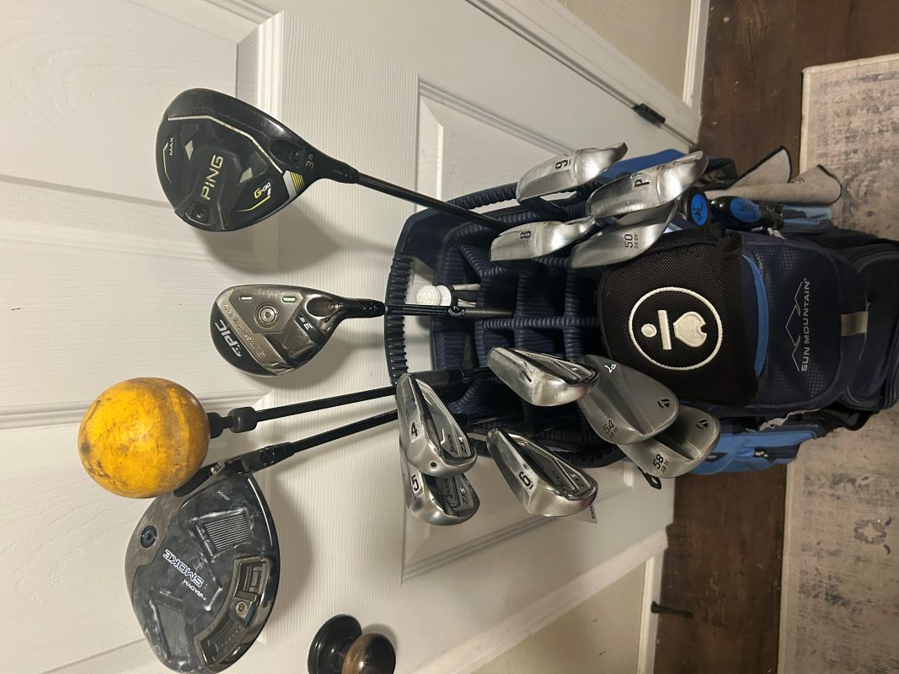

Club Fitting Process
A professional club fitting uses launch monitor data to match equipment to your unique swing. This improves consistency, distance, and accuracy by optimizing metrics like swing speed, ball speed, and spin rate. The numbers help the fitter recommend shafts, lofts, lie angles, and grips that suit your game. Below are the key metrics measured during a session, with typical ranges for amateur golfers (mid-handicap, ~90–100 mph swing speed).
Key Fitting Metrics
| Metric | Description | Typical Amateur Range |
|---|---|---|
| Swing Speed | Clubhead velocity at impact (mph). Higher speed increases potential distance but requires matching shaft flex. | 85–100 mph |
| Ball Speed | Speed of the ball immediately after impact (mph). Result of clubhead speed and smash factor; key for carry distance. | 120–150 mph (driver) |
| Launch Angle | Initial upward angle of the ball's flight (degrees). Optimal angle maximizes carry without excessive spin. | 10–15° (driver) |
| Spin Rate | Backward rotation of the ball (rpm). Balanced spin provides control and carry; too high reduces distance, too low causes rollout. | 2000–3000 rpm (driver) |
| Smash Factor | Efficiency of energy transfer (ball speed ÷ clubhead speed). Closer to 1.50 indicates solid, centered contact. | 1.40–1.50 (driver) |
| Carry Distance | Distance the ball travels through the air before landing (yards). Primary measure of distance potential from fitting. | 200–250 yards (driver) |
Swing Analysis Demo
This short video shows a golfer hitting indoors on a launch monitor to capture key swing data. This data help golf fitting professionals find the right combintation of head and shaft for the golfers swing. Golfers can expect to hit around 100 shots for a full bag fitting.
What's In My Bag (Current Setup)
Here are the clubs I currently play, with specs and my actual carry distances from launch monitor/on-course results. A fitting could help optimize these for even better consistency and performance.
| Club | Brand/Model | Shaft | Weight | Flex | Carry Distance (yds) |
|---|---|---|---|---|---|
| Driver | Callaway Paradym Ai Smoke Max | Kai'li White | 60g | Stiff | 257 |
| 3-Wood | Ping G430 Max | Ping Tour 2.0 | 75g | Stiff | 220 |
| 3-Hybrid | Callaway Epic SuperHybrid | Steelfiber | 85g | Stiff | 210 |
| 4–5 Iron | Srixon ZX4 MKII | KBS Tour Lite | 100g | Stiff | 198 (4), 187(5) |
| 6–PW | Srixon ZX5 MKII | KBS Tour Lite | 100g | Stiff | 175 (6), down to 130 (PW) |
| Wedges | TaylorMade MD4 (50/54/58) | KBS Tour Lite | 100g | Stiff | 115 to 85 |
| Putter | LAB Mezz.1 | — | — | — | — |
